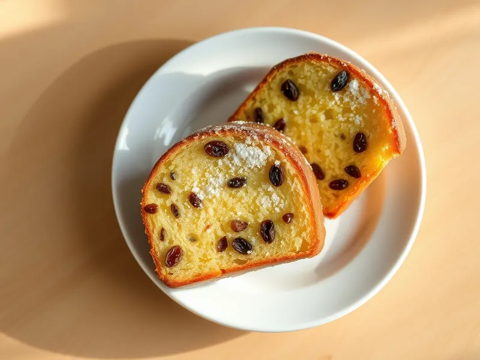

Кекс «Столичный» с изюмом
Советский сливочный кекс с изюмом и трещинкой посередине
120 мин12 порц.326 ккал на порциюБ 5 · Ж 16 · У 41Русская кухня
Открыть в приложении: порции, таймеры, список покупок
Продукты на 12 порц.
- Сливочное масло200 г
- Сахар1 стак.
- Яйцо куриное4 шт
- Мука пшеничная250 г
- Изюм150 г
- Разрыхлитель1,5 ч. л.
- Соль1 щеп.
- Ванильный сахар1 шт
Как готовить
- Промойте изюм, залейте кипятком на 10 минут, затем обсушите полотенцем и обваляйте в 1 ст. л. муки.
- Взбейте мягкое сливочное масло со 190 г сахара и ванильным сахаром миксером 5 минут до пышной светлой массы.
- Вбивайте яйца по одному, каждый раз взбивая около 1 минуты.
- Всыпьте муку с разрыхлителем и солью, перемешайте лопаткой до однородности и вмешайте изюм.
- Выложите тесто в форму для кекса 25 см с бумагой, разровняйте и проведите ложкой углубление по центру, чтобы кекс красиво треснул посередине.
- Выпекайте 60-70 минут при 160 °C (слабый жар) до золотистого цвета и сухой шпажки.
- Остудите кекс полностью и посыпьте оставшимся сахаром, смолотым в пудру.
Совет. Масло и яйца достаньте из холодильника за 1 час: холодные продукты не взбиваются в пышную массу, и тесто расслаивается.